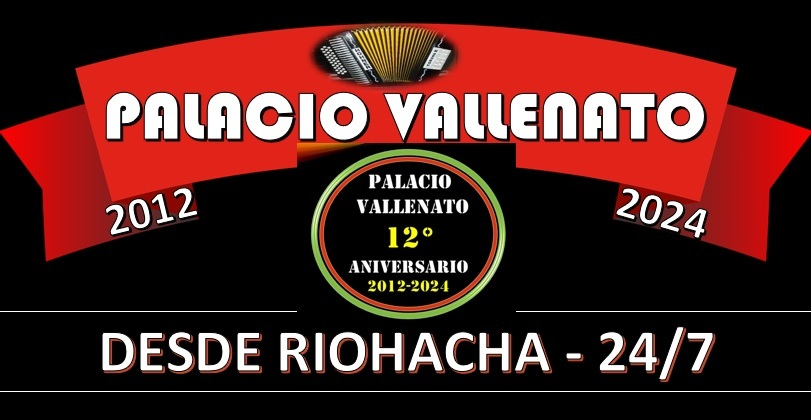

Bienvenidos al "PALACIO VALLENATO"!
Tu Vallenato Real

PALACIO VALLENATO: una experiencia musical única desde su creación en el año 2012. Radio Online que se ha convertido
en una de las principales emisoras de la música vallenata en Colombia. Con sede en Riohacha - La Guajira, esta emisora
transmite las 24 horas del día, los 365 días del año, llevando a sus oyentes lo mejor de la música típica de esta región,
al son de la Caja, la Guacharaca y el Acordeón.
"A Y Ú D A N O S"
ESCANÉAME